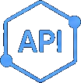

The support team wants to try Claude, and the batch team wants the same model for nightly summaries. You don't
want either team to hold an Anthropic key, and you don't want to edit their code every time you switch models.
In this lab you add Anthropic as a provider whose key only the gateway knows, publish two Claude models behind
aliases such as support-chat, and then point support-chat at a bigger model while the clients keep sending
the same name.
Before you begin
On the Bicep + azd track, azd up creates its own gateway, Foundry model, and key, so you can skip this
section, except for the Anthropic key. You need only that key and
Cloud Shell or the azd tools.
- Complete Publish a Foundry model and make your first call. You need the gateway, a runtime API key, and the Foundry alias you created there.
- An API key from the Claude Console that can call two models, for example
claude-haiku-5-5andclaude-sonnet-5-5. To use another provider instead, see the values in Add Anthropic as a custom provider. - Permission to change the gateway, for example Contributor on its resource group.
- For the CLI track and the Verify scripts: the Azure CLI with the
aigatewayextension, signed in, andjqfor the Bash snippets and scripts. The PowerShell scripts need PowerShell 7 or later. - For the scripts and samples: the labs repo, cloned. Run them from the lab
folder,
~/ai-gateway/labs/03-multi-provider-aliases.
Set these variables once. Every track and the Verify section reuse them.
export RG="<resource-group>"
export GATEWAY="<gateway>"
export PROVIDER="anthropic" # the gateway provider you create in this lab
export FAST_MODEL="claude-haiku-5-5" # two models that your Anthropic key can call
export SMART_MODEL="claude-sonnet-5-5"
export AI_GATEWAY_URL="https://$(az aigateway show -g "$RG" -n "$GATEWAY" --query properties.frontend.defaultHostname -o tsv)"
# Paste the gateway runtime key from lab 02, not the Anthropic key. Don't commit it or write it to a file.
read -rsp "AI Gateway API key: " AI_GATEWAY_API_KEY && export AI_GATEWAY_API_KEY && echo$RG = "<resource-group>"
$GATEWAY = "<gateway>"
$PROVIDER = "anthropic" # the gateway provider you create in this lab
$FAST_MODEL = "claude-haiku-5-5" # two models that your Anthropic key can call
$SMART_MODEL = "claude-sonnet-5-5"
$env:AI_GATEWAY_URL = "https://$(az aigateway show -g $RG -n $GATEWAY --query properties.frontend.defaultHostname -o tsv)"
# Paste the gateway runtime key from lab 02, not the Anthropic key. Don't commit it or write it to a file.
$env:AI_GATEWAY_API_KEY = Read-Host "AI Gateway API key" -MaskInputHow it works
The gateway publishes models in three layers:
| Object | What it holds | Unique within | Example |
|---|---|---|---|
| Model provider | A backend endpoint and the credential the gateway uses to call it | The gateway | anthropic, key sent in x-api-key |
| Backend model | A model that the provider serves, and the interfaces it supports | Its provider | claude-haiku-5-5 |
| Alias | The callable name that clients put in the model field. It points to one or more backend models and can carry its own policies. | The gateway | support-chat |
Clients only ever see the gateway URL, their runtime key, and the alias. The provider key stays in the gateway. In this lab each alias points to one backend model. To split traffic across several backend models by priority and weight, see Route an alias across models by priority and weight.
Each interface has its own route under https://<gateway>.eastus2-01.ai.gateway.azure.com/default/models:
| Interface | Route |
|---|---|
| OpenAI Chat Completions | /openai/v1/chat/completions |
| OpenAI Responses | /openai/v1/responses |
| Anthropic Messages | /anthropic/v1/messages |
Every model runs in passthrough mode. The gateway keeps the provider's request and response format and doesn't translate between OpenAI and Anthropic, so call each model on an interface it advertises, and retarget an alias only to a model that supports the same interface.
Add Anthropic as a custom provider
The gateway connects to these providers. Microsoft Foundry and Azure OpenAI can use the gateway's managed identity. Every other provider is a custom provider, and the gateway stores its API key.
| Provider | How you add it | Gateway authenticates with | |
|---|---|---|---|
| Microsoft Foundry | Models from Microsoft Foundry | Managed identity (recommended) or API key | |
| Azure OpenAI | Models from Microsoft Foundry | Managed identity (recommended) or API key | |
| OpenAI | Models from a custom provider | API key | |
| Anthropic | Models from a custom provider | API key | |
| AWS Bedrock | Models from a custom provider | API key | |
| Google Vertex AI | Models from a custom provider | API key | |
 | Any other OpenAI-compatible endpoint | Models from a custom provider | API key |
Pick one track. Every track creates the same result: a provider named anthropic, two backend models, and two
aliases. support-chat points to the fast model, and anthropic/claude-sonnet-5-5 points to the bigger one. The
Bicep + azd track also declares the batch-chat alias and the token limits of the next section.
Start the custom provider wizard
Open the AI Gateway portal and select your gateway from the gateway switcher. Select ModelsAddModels from a custom provider. Add custom provider in the Set up your gateway guide on Home opens the same wizard.
On the Provider step, select Create new provider and fill in Basic info:
| Field | Value |
|---|---|
| Display name | Anthropic |
| Provider name | anthropic (used in the resource ID; you can't change it later) |
| Description | Optional |
Select Next.
Connect the endpoint
On the Endpoint step, fill in Endpoint and authentication:
| Field | Value for Anthropic |
|---|---|
| Base endpoint URL | https://api.anthropic.com |
| Header name | x-api-key |
| API key | Your Anthropic API key |
| Authentication scheme | Leave Include Bearer in the authorization header value cleared. Anthropic expects the raw key. |
The wizard lists the provider's models by calling <base endpoint URL>/v1/models, so leave /v1 off the base
URL. The key is stored in the gateway. Apps that call the gateway never receive it.
For other providers, change these values:
| Provider | Base endpoint URL | Header name | Authentication scheme |
|---|---|---|---|
| OpenAI | https://api.openai.com | Authorization | Selected, so the gateway sends Bearer <key> |
| Other OpenAI-compatible endpoints | The URL in front of /v1/... | The header the endpoint expects | As the endpoint expects |
| AWS Bedrock, Google Vertex AI | The provider's OpenAI-compatible endpoint, without the /v1/... path | The header that the provider's API key goes in | As the provider expects |
Select Next.
Choose the models and their aliases
The Models step shows Discovering available models… while it calls the provider. Then select AddIndividual model and add each model:
| Field | First model | Second model |
|---|---|---|
| Backend model | claude-haiku-5-5 | claude-sonnet-5-5 |
| Supported endpoints | Anthropic messages | Anthropic messages |
| Callable alias | Change it to support-chat | Keep the default, anthropic/claude-sonnet-5-5 |
If discovery fails or times out, you can still add the models by hand. Select Add models.
Models lists the two Claude models of the Anthropic provider and the aliases support-chat and
anthropic/claude-sonnet-5-5. Open a model: its Overview shows the Anthropic Messages endpoint,
https://<gateway>.eastus2-01.ai.gateway.azure.com/default/models/anthropic/v1/messages.
Check the variables
The provider, its models, and the aliases are child resources of the gateway's default workspace. You set
RG, GATEWAY, WS (the workspace URL), and API in Before you begin. Check that they
point at your gateway by listing its model providers. The command is the same in Bash and PowerShell.
az aigateway model-provider list -g "$RG" --gateway-name "$GATEWAY" -o tableThe table lists the provider from lab 02, of kind Foundry. If the command fails, set the variables again.
Create the provider
The command reads the Anthropic key from a hidden prompt, so it never lands in your shell history. The command
output, like az aigateway model-provider show, never includes the key.
read -rsp "Anthropic API key: " ANTHROPIC_API_KEY && echo
az aigateway model-provider create -g "$RG" --gateway-name "$GATEWAY" -n "$PROVIDER" \
--kind Custom --display-name "Anthropic" \
--custom "$(jq -cn --arg key "$ANTHROPIC_API_KEY" '{
endpoint: "https://api.anthropic.com",
authentication: {kind: "ApiKey", apiKey: {headerName: "x-api-key", value: $key}}}')" \
--query "{name:name,kind:properties.kind,endpoint:properties.custom.endpoint}"
unset ANTHROPIC_API_KEY$key = Read-Host "Anthropic API key" -MaskInput
@{
endpoint = 'https://api.anthropic.com'
authentication = @{ kind = 'ApiKey'; apiKey = @{ headerName = 'x-api-key'; value = $key } }
} | ConvertTo-Json -Depth 10 -Compress | Set-Content -Path custom.json
az aigateway model-provider create -g $RG --gateway-name $GATEWAY -n $PROVIDER `
--kind Custom --display-name "Anthropic" --custom '@custom.json' `
--query "{name:name,kind:properties.kind,endpoint:properties.custom.endpoint}"
Remove-Item custom.json; Remove-Variable key # the file held the key, so delete it right awayFor OpenAI, use https://api.openai.com, the header Authorization, and the value Bearer <key>.
Register the backend models
A backend model names one of the provider's models. Its name (--name) may only contain lowercase letters, digits,
and hyphens. If the provider's model ID contains other characters, replace them with - in --name and keep the
real ID in modelName.
for MODEL in "$FAST_MODEL" "$SMART_MODEL"; do
az aigateway model create -g "$RG" --gateway-name "$GATEWAY" --provider-name "$PROVIDER" -n "$MODEL" \
--display-name "$MODEL" --supported-endpoints /v1/messages --deployment-config "{modelName:$MODEL}" \
--query "{name:name,endpoints:properties.supportedEndpoints}" -o json
doneforeach ($model in $FAST_MODEL, $SMART_MODEL) {
az aigateway model create -g $RG --gateway-name $GATEWAY --provider-name $PROVIDER -n $model `
--display-name $model --supported-endpoints /v1/messages --deployment-config "{modelName:$model}" `
--query "{name:name,endpoints:properties.supportedEndpoints}" -o json
}The provider settings and model bodies mirror what the portal sends. For custom providers, supportedEndpoints
holds the provider path: /v1/messages for Anthropic, /v1/chat/completions or /v1/responses for
OpenAI-compatible endpoints. Leave out --api-format for custom providers. If the service rejects either
command, create the provider and models with the Portal tab, then continue here with the aliases.
Create the aliases
An alias lists its backend models by resource ID in properties.backendModels. Here each alias has one. The
callable name goes in properties.aliasName, which --routing-name sets, and -n sets the resource name.
Callable names may contain /, but resource names can't, so the script derives the resource name the same way
the portal does: anthropic/claude-sonnet-5-5 is stored as anthropic-claude-sonnet-5-5.
./infra/alias.sh put support-chat "$PROVIDER" "$FAST_MODEL"
./infra/alias.sh put "$PROVIDER/$SMART_MODEL" "$PROVIDER" "$SMART_MODEL"./infra/alias.ps1 -ResourceGroup $RG -Gateway $GATEWAY put support-chat $PROVIDER $FAST_MODEL
./infra/alias.ps1 -ResourceGroup $RG -Gateway $GATEWAY put "$PROVIDER/$SMART_MODEL" $PROVIDER $SMART_MODELOn GitHub, open alias.sh or alias.ps1. For a new alias, each put runs a
command like this. For an alias that already exists, it runs az aigateway model-alias update with the same
arguments.
az aigateway model-alias create -g <resource-group> --gateway-name <gateway> -n support-chat \
--routing-name support-chat \
--backend-model resource-id=.../workspaces/default/modelProviders/anthropic/models/claude-haiku-5-5 \
--policies '[]' --only-show-errors -o none./infra/alias.sh list shows support-chat → anthropic/claude-haiku-5-5 and
anthropic/claude-sonnet-5-5 → anthropic/claude-sonnet-5-5, next to your Foundry alias from lab 02.
What you need: Cloud Shell or the azd tools with the
aigateway extension, signed in. This
track doesn't use your gateway from earlier labs: azd up creates a new one, so it works on its own.
Choose what to declare
The provider, its models, and the aliases are child resources of the gateway's default workspace:
modelProviders, modelProviders/models, and aliases. The template declares the same bodies as the Azure CLI
track. The Anthropic key is a @secure() parameter: the gateway stores it, and it never shows in the deployment
history, the outputs, or the az aigateway model-provider show output.
| azd environment value | Parameter | Default |
|---|---|---|
ANTHROPIC_API_KEY | anthropicApiKey | None. azd up asks for it if you don't set it. |
FAST_MODEL | fastModel | claude-haiku-5-5 |
SMART_MODEL | smartModel | claude-sonnet-5-5 |
SUPPORT_CHAT_MODEL | supportChatModel | The fast model |
SUPPORT_CHAT_TOKENS_PER_MINUTE | supportChatTokensPerMinute | 20000 |
BATCH_CHAT_TOKENS_PER_MINUTE | batchChatTokensPerMinute | 2000 |
Clone the lab
The lab is a small azd project in the
labs/03-multi-provider-aliases
folder. Clone the labs repo if you haven't yet, then move into the lab's folder.
cd ~/ai-gateway/labs/03-multi-provider-aliasesReview the templates
infra/main.bicep creates the resource group rg-<environment name> and calls the quick start's
resources.bicep for the gateway, the Foundry model, its default alias, and the
runtime key. Then it calls infra/anthropic-aliases.bicep with the Anthropic key and the model names:
// Lab 03 with azd: "azd up" creates the resource group rg-<environment name>, the quick start's gateway, Foundry
// model, default alias, and runtime API key, then an Anthropic provider with two Claude models behind three
// aliases. The Anthropic key comes from ANTHROPIC_API_KEY in the azd environment and is never an output.
targetScope = 'subscription'
@description('azd environment name. The resource group is rg-<environmentName>.')
@minLength(1)
@maxLength(60)
param environmentName string
@description('Region for every resource. Pick one where AI Gateway and the lab\'s Foundry models are available. List them with az provider show --namespace Microsoft.ApiManagement (Setup guide, Find the available regions).')
@metadata({ azd: { type: 'location' } })
param location string
@secure()
@description('The Anthropic API key. azd reads it from ANTHROPIC_API_KEY.')
param anthropicApiKey string
@description('A fast model that your Anthropic key can call. azd reads it from FAST_MODEL.')
param fastModel string = 'claude-haiku-5-5'
@description('A bigger model that your Anthropic key can call. azd reads it from SMART_MODEL.')
param smartModel string = 'claude-sonnet-5-5'
@description('The backend model behind support-chat: empty for fastModel, or smartModel. azd reads it from SUPPORT_CHAT_MODEL.')
param supportChatModel string = ''
@description('Per-caller tokens per minute for support-chat. azd reads it from SUPPORT_CHAT_TOKENS_PER_MINUTE.')
@minValue(1)
param supportChatTokensPerMinute int = 20000
@description('Per-caller tokens per minute for batch-chat. azd reads it from BATCH_CHAT_TOKENS_PER_MINUTE.')
@minValue(1)
param batchChatTokensPerMinute int = 2000
var suffix = take(uniqueString(subscription().id, environmentName, location), 6)
var tags = { 'azd-env-name': environmentName }
resource rg 'Microsoft.Resources/resourceGroups@2024-03-01' = {
name: 'rg-${environmentName}'
location: location
tags: tags
}
// The quick start's template: a gateway, a Foundry model behind the default alias, and the app-first-call key.
module base '../../quickstart/infra/resources.bicep' = {
name: 'aigw-base'
scope: rg
params: {
location: location
tags: tags
gatewayName: 'aigw-${suffix}'
foundryName: 'aigw${suffix}'
}
}
module anthropic 'anthropic-aliases.bicep' = {
name: 'aigw-anthropic-aliases'
scope: rg
params: {
gatewayName: base.outputs.gatewayName
anthropicApiKey: anthropicApiKey
fastModel: fastModel
smartModel: smartModel
supportChatModel: empty(supportChatModel) ? fastModel : supportChatModel
supportChatTokensPerMinute: supportChatTokensPerMinute
batchChatTokensPerMinute: batchChatTokensPerMinute
}
}
output AZURE_RESOURCE_GROUP string = rg.name
output AI_GATEWAY_NAME string = base.outputs.gatewayName
output AI_GATEWAY_ID string = base.outputs.gatewayId
output AI_GATEWAY_URL string = base.outputs.gatewayUrl
output AI_GATEWAY_PROVIDER string = base.outputs.providerName
output AI_GATEWAY_BACKEND_MODEL string = base.outputs.modelName
output AI_GATEWAY_MODEL string = base.outputs.aliasName
output FOUNDRY_ACCOUNT_NAME string = base.outputs.foundryName
output ANTHROPIC_PROVIDER string = anthropic.outputs.providerName
output ANTHROPIC_FAST_MODEL string = anthropic.outputs.fastModel
output ANTHROPIC_SMART_MODEL string = anthropic.outputs.smartModelinfra/anthropic-aliases.bicep declares the provider, the two backend models, and the three aliases, each with its
callable name in aliasName and its token limit in policies. It only references the gateway, so you can also
deploy it on its own to a gateway you already have, with az deployment group create:
// Adds Anthropic to an existing AI Gateway as a custom provider, registers two Claude models, and publishes them
// behind three callable aliases: support-chat and batch-chat, each with its own per-caller token limit, and
// anthropic/<smart model>. main.bicep calls it after the quick start's template, and you can also deploy it on its
// own to a gateway you already have. The Anthropic key is a secure parameter: the gateway stores it, it never
// appears in the deployment history or the outputs, and clients never receive it.
@description('Name of the existing AI Gateway (Microsoft.ApiManagement/aigateways).')
param gatewayName string
@description('Name of the custom provider to create. It\'s part of the resource ID, so you can\'t change it later.')
param providerName string = 'anthropic'
@secure()
@description('The Anthropic API key that the gateway sends to Anthropic in the x-api-key header.')
param anthropicApiKey string
@description('A fast model that your Anthropic key can call.')
param fastModel string = 'claude-haiku-5-5'
@description('A bigger model that your Anthropic key can call.')
param smartModel string = 'claude-sonnet-5-5'
@description('The backend model behind the support-chat alias: fastModel or smartModel.')
param supportChatModel string = fastModel
@description('Per-caller tokens per minute for the support-chat alias.')
@minValue(1)
param supportChatTokensPerMinute int = 20000
@description('Per-caller tokens per minute for the batch-chat alias.')
@minValue(1)
param batchChatTokensPerMinute int = 2000
#disable-next-line BCP081
resource gateway 'Microsoft.ApiManagement/aigateways@2025-09-01-preview' existing = {
name: gatewayName
}
#disable-next-line BCP081
resource workspace 'Microsoft.ApiManagement/aigateways/workspaces@2025-09-01-preview' existing = {
parent: gateway
name: 'default'
}
// Leave /v1 off the endpoint. Anthropic expects the raw key in x-api-key, with no "Bearer" scheme.
#disable-next-line BCP081
resource provider 'Microsoft.ApiManagement/aigateways/workspaces/modelProviders@2025-09-01-preview' = {
parent: workspace
name: providerName
properties: {
kind: 'Custom'
displayName: 'Anthropic'
custom: {
endpoint: 'https://api.anthropic.com'
authentication: {
kind: 'ApiKey'
apiKey: {
headerName: 'x-api-key'
value: anthropicApiKey
}
}
}
}
}
// Custom providers list the provider path in supportedEndpoints and leave out apiFormat. Names may only contain
// lowercase letters, digits, and hyphens; modelName keeps the provider's real model ID.
#disable-next-line BCP081
resource models 'Microsoft.ApiManagement/aigateways/workspaces/modelProviders/models@2025-09-01-preview' = [for name in [ fastModel, smartModel ]: {
parent: provider
name: name
properties: {
displayName: name
supportedEndpoints: [ '/v1/messages' ]
deployment: {
modelName: name
}
}
}]
var fastModelId = models[0].id
var smartModelId = models[1].id
// The callable name goes in aliasName and can contain "/". The resource name can't, so it uses "-" instead.
var aliases = [
{
name: 'support-chat'
aliasName: 'support-chat'
modelId: supportChatModel == smartModel ? smartModelId : fastModelId
tokensPerMinute: supportChatTokensPerMinute
}
{
name: 'batch-chat'
aliasName: 'batch-chat'
modelId: fastModelId
tokensPerMinute: batchChatTokensPerMinute
}
{
name: '${providerName}-${smartModel}'
aliasName: '${providerName}/${smartModel}'
modelId: smartModelId
tokensPerMinute: 0
}
]
#disable-next-line BCP081
resource aliasResources 'Microsoft.ApiManagement/aigateways/workspaces/aliases@2025-09-01-preview' = [for alias in aliases: {
parent: workspace
name: alias.name
properties: {
aliasName: alias.aliasName
backendModels: [
{ resourceId: alias.modelId }
]
policies: alias.tokensPerMinute > 0 ? [
{
type: 'tokenLimit'
count: alias.tokensPerMinute
period: 'minute'
counterKey: [ 'identity' ]
}
] : []
}
}]
output providerName string = provider.name
output fastModel string = models[0].name
output smartModel string = models[1].name
output aliasNames array = [for (alias, i) in aliases: aliasResources[i].properties.aliasName]
output messagesUrl string = 'https://${gateway.properties.frontend.defaultHostname}/default/models/anthropic/v1/messages'Deploy with azd up
Create an azd environment named aigw-lab03 in your current subscription, and give it the Anthropic key from a
hidden prompt, so that it never lands in your shell history. Then provision everything. It takes about three
minutes.
azd env new aigw-lab03 --location eastus2 --subscription "$(az account show --query id --output tsv)"
read -rsp "Anthropic API key: " ANTHROPIC_API_KEY && echo
azd env set ANTHROPIC_API_KEY "$ANTHROPIC_API_KEY"
unset ANTHROPIC_API_KEY
azd upazd env new aigw-lab03 --location eastus2 --subscription (az account show --query id --output tsv)
$key = Read-Host "Anthropic API key" -MaskInput
azd env set ANTHROPIC_API_KEY $key
Remove-Variable key
azd upFor another region, pick one where AI Gateway and the gpt-6-luna model are available, as in Find the available
regions. azd keeps the key in .azure/aigw-lab03/.env,
which .azure/.gitignore keeps out of Git. If your Claude Console key can't call the default models, set FAST_MODEL
and SMART_MODEL with azd env set before azd up.
Read the outputs and the key
Set the variables that the next sections and Verify use from azd's environment values, and read the gateway's runtime key, not the Anthropic key, from the gateway, so that it never shows on screen.
export RG="$(azd env get-value AZURE_RESOURCE_GROUP)"
export GATEWAY="$(azd env get-value AI_GATEWAY_NAME)"
export PROVIDER="$(azd env get-value ANTHROPIC_PROVIDER)"
export FAST_MODEL="$(azd env get-value ANTHROPIC_FAST_MODEL)"
export SMART_MODEL="$(azd env get-value ANTHROPIC_SMART_MODEL)"
export AI_GATEWAY_URL="$(azd env get-value AI_GATEWAY_URL)"
export AI_GATEWAY_API_KEY="$(az aigateway api-key list-secrets \
--ids "$(azd env get-value AI_GATEWAY_ID)/apiKeys/app-first-call" --query primaryKey --output tsv)"
./infra/alias.sh list$RG = azd env get-value AZURE_RESOURCE_GROUP
$GATEWAY = azd env get-value AI_GATEWAY_NAME
$PROVIDER = azd env get-value ANTHROPIC_PROVIDER
$FAST_MODEL = azd env get-value ANTHROPIC_FAST_MODEL
$SMART_MODEL = azd env get-value ANTHROPIC_SMART_MODEL
$env:AI_GATEWAY_URL = azd env get-value AI_GATEWAY_URL
$env:AI_GATEWAY_API_KEY = az aigateway api-key list-secrets `
--ids "$(azd env get-value AI_GATEWAY_ID)/apiKeys/app-first-call" --query primaryKey --output tsv
./infra/alias.ps1 -ResourceGroup $RG -Gateway $GATEWAY listazd up ended with SUCCESS. The list shows support-chat → anthropic/claude-haiku-5-5, batch-chat →
anthropic/claude-haiku-5-5, and anthropic/claude-sonnet-5-5 → anthropic/claude-sonnet-5-5, next to the
quick start's gpt-6-luna → foundry-models/gpt-6-luna.
Call Claude through the gateway
Send a native Anthropic Messages request to the gateway's Anthropic route. Three things differ from a direct
call to Anthropic: the URL is the gateway's, the api-key header carries your gateway runtime key, and model
is the alias. Keep the anthropic-version header that the Messages API expects.
curl -sS "${AI_GATEWAY_URL%/}/default/models/anthropic/v1/messages" \
-H "api-key: $AI_GATEWAY_API_KEY" \
-H "anthropic-version: 2023-06-01" \
-H "Content-Type: application/json" \
-d '{"model": "support-chat", "max_tokens": 1024,
"messages": [{"role": "user", "content": "In one sentence, what is an AI gateway?"}]}' \
| jq '{model, text: ([.content[] | select(.type == "text") | .text] | join("")), usage}'$headers = @{ 'api-key' = $env:AI_GATEWAY_API_KEY; 'anthropic-version' = '2023-06-01' }
$body = @{
model = 'support-chat'
max_tokens = 1024
messages = @(@{ role = 'user'; content = 'In one sentence, what is an AI gateway?' })
} | ConvertTo-Json -Depth 5
$r = Invoke-RestMethod -Method Post -Uri "$($env:AI_GATEWAY_URL.TrimEnd('/'))/default/models/anthropic/v1/messages" `
-Headers $headers -ContentType 'application/json' -Body $body
[pscustomobject]@{ model = $r.model; text = (@($r.content) | Where-Object type -eq 'text' | ForEach-Object text) -join ''; usage = $r.usage }The response uses Anthropic's own format, with content blocks, stop_reason, and usage.input_tokens. It
doesn't use OpenAI's choices. The model field names the backend model that answered, for example
claude-haiku-5-5. Claude Sonnet 5.5 and Haiku 5.5 think adaptively by default, so content can start
with a thinking block, and thinking counts toward max_tokens. Read the text blocks and leave headroom in
max_tokens.
The call returns a Claude reply, and model is claude-haiku-5-5. Your app never sent an Anthropic
key.
Give one backend model two aliases
The batch team's nightly job shouldn't be able to use up the capacity that the support app needs. Point a second
alias, batch-chat, at the same fast model and give each alias its own per-caller token limit: 2,000 tokens per
minute for batch-chat and 20,000 for support-chat. Alias policies apply only to callers that use that name.
Policies on the backend model apply to every alias that targets it.
Add the batch-chat alias
Select ModelsAliasesAdd alias. The Create alias wizard has four steps:
| Step | What to do |
|---|---|
| Basics | Set Alias name to batch-chat and Description to Nightly batch summaries. |
| Select models | Under Available backend models, select claude-haiku-5-5 from the Anthropic provider. |
| Priority and weights | Keep the defaults, priority 0 and weight 1. With one backend model, it gets all requests. |
| Review | Check the summary. |
Select Create. You can also start from ModelsAddAlias for an existing model.
Limit each alias
Select PoliciesAdd policy. On the Type step, select Token rate limit, then Next. On the
Scope step, select Individual assets, select the batch-chat alias, then Next. On the
Configure step, set Time period to Per minute, Allowed tokens to 2000, and Counter
dimensions to Caller identity. Select Create.
Repeat for the support-chat alias with 20000 Allowed tokens.
Policies lists two Token rate limit policies, one scoped to batch-chat and one scoped to
support-chat.
Put both aliases with their limits
The optional fourth argument adds a per-caller token limit to the alias. It's the same tokenLimit policy
object that models use.
./infra/alias.sh put batch-chat "$PROVIDER" "$FAST_MODEL" 2000
./infra/alias.sh put support-chat "$PROVIDER" "$FAST_MODEL" 20000./infra/alias.ps1 -ResourceGroup $RG -Gateway $GATEWAY put batch-chat $PROVIDER $FAST_MODEL 2000
./infra/alias.ps1 -ResourceGroup $RG -Gateway $GATEWAY put support-chat $PROVIDER $FAST_MODEL 20000The command now passes a policy in --policies:
[ { "type": "tokenLimit", "count": 2000, "period": "minute", "counterKey": ["identity"] } ]put replaces the alias's whole policies list, so a put without a limit removes it. To change only the
target, use retarget in the next section.
Each command prints the alias with tokenLimit 2000/minute or tokenLimit 20000/minute.
Check the declared limits
azd up already created batch-chat and both limits: anthropic-aliases.bicep declares each alias with a
tokenLimit policy, the same object that the Azure CLI track passes in --policies. Show the batch-chat alias.
./infra/alias.sh show batch-chat | jq '.properties.policies'(./infra/alias.ps1 -ResourceGroup $RG -Gateway $GATEWAY show batch-chat | ConvertFrom-Json).properties.policiesTo change a limit, set BATCH_CHAT_TOKENS_PER_MINUTE or SUPPORT_CHAT_TOKENS_PER_MINUTE with azd env set, then
run azd provision.
The output lists one tokenLimit policy with "count": 2000, "period": "minute", and
"counterKey": ["identity"].
Retarget an alias without touching clients
The support team wants better answers. Point support-chat at the bigger model. The clients keep sending
"model": "support-chat", and the alias keeps its 20,000-token limit.
Edit the alias
In ModelsAliases, open the support-chat alias and select Edit. Edit alias has the same
steps as Create alias. On Select models, clear claude-haiku-5-5 and select claude-sonnet-5-5 from
the Anthropic provider. Keep the defaults on Priority and weights, select Next until you reach
Review, then select Save. New requests use the selected backend model immediately.
Check that the policy stayed
On the support-chat alias page, select the Policies tab.
The alias page shows claude-sonnet-5-5 on the Backend models tab, and the Policies tab still lists the
20,000-token Token rate limit.
Update only the backend model
retarget runs az aigateway model-alias update with only --backend-model. The command changes only the
properties you pass, so the alias name, description, and policies stay as they are.
./infra/alias.sh retarget support-chat "$PROVIDER" "$SMART_MODEL"./infra/alias.ps1 -ResourceGroup $RG -Gateway $GATEWAY retarget support-chat $PROVIDER $SMART_MODELaz aigateway model-alias update -g <resource-group> --gateway-name <gateway> -n support-chat \
--backend-model resource-id=.../modelProviders/anthropic/models/claude-sonnet-5-5 --only-show-errors -o noneThe output shows support-chat → anthropic/claude-sonnet-5-5 and still tokenLimit 20000/minute.
Change the backend model in the environment
The template points support-chat at the model in SUPPORT_CHAT_MODEL, and the fast model when it's empty. Set it
to the bigger model and provision again. The deployment replaces the whole alias, but the template declares the
policy with it, so the limit stays.
azd env set SUPPORT_CHAT_MODEL "$SMART_MODEL"
azd provision
./infra/alias.sh listazd env set SUPPORT_CHAT_MODEL $SMART_MODEL
azd provision
./infra/alias.ps1 -ResourceGroup $RG -Gateway $GATEWAY listThe output shows support-chat → anthropic/claude-sonnet-5-5 and still tokenLimit 20000/minute.
Retarget only between backend models that support the same interface. An alias that clients call with the Anthropic Messages API must keep pointing to a model that supports Anthropic Messages.
Verify
List the aliases
./infra/alias.sh list./infra/alias.ps1 -ResourceGroup $RG -Gateway $GATEWAY listExpected output (the order and your Foundry alias differ):
ALIAS PROVIDER/BACKEND MODEL ALIAS POLICIES
anthropic/claude-sonnet-5-5 anthropic/claude-sonnet-5-5 -
batch-chat anthropic/claude-haiku-5-5 tokenLimit 2000/minute
contoso-ai/gpt-6-luna contoso-ai/gpt-6-luna -
support-chat anthropic/claude-sonnet-5-5 tokenLimit 20000/minuteYour Foundry and Anthropic models sit side by side behind one gateway. In the portal, Models shows the same list.
Call both aliases
The script sends a Messages request and prints the status, the backend model that answered, and the reply.
./infra/call-anthropic.sh support-chat
./infra/call-anthropic.sh batch-chat./infra/call-anthropic.ps1 -Alias support-chat
./infra/call-anthropic.ps1 -Alias batch-chatOn GitHub, open call-anthropic.sh or call-anthropic.ps1.
Expected output (the replies differ):
Alias: support-chat
Status: 200
Model: claude-sonnet-5-5
Reply: An AI gateway is a control point between applications and AI models that ...
Alias: batch-chat
Status: 200
Model: claude-haiku-5-5
Reply: An AI gateway sits between your apps and AI models to ...support-chat now answers with Sonnet and batch-chat with Haiku, and you didn't change the client request.
Confirm the alias kept its policy
./infra/alias.sh show support-chat | jq '.properties.policies'(./infra/alias.ps1 -ResourceGroup $RG -Gateway $GATEWAY show support-chat | ConvertFrom-Json).properties.policiesThe output lists the tokenLimit policy with "count": 20000 and "counterKey": ["identity"]. In the portal,
open support-chat and select Policies.
Go further
Use the Anthropic SDK. Point the SDK at the gateway's Anthropic base URL. The SDK appends
/v1/messagesitself and sendsanthropic-versionfor you.Pythonimport os from anthropic import Anthropic # pip install anthropic client = Anthropic( base_url=os.environ["AI_GATEWAY_URL"].rstrip("/") + "/default/models/anthropic", api_key="unused", # required by the SDK; the gateway reads the api-key header default_headers={"api-key": os.environ["AI_GATEWAY_API_KEY"]}, ) message = client.messages.create( model="support-chat", max_tokens=1024, messages=[{"role": "user", "content": "Hello"}], ) print(message.model, "".join(block.text for block in message.content if block.type == "text"))Move one alias between providers. Add OpenAI as a second custom provider with the values from the provider table, and register
gpt-6-lunawith OpenAI chat completions. Create an alias such asteam-chaton your Foundrygpt-6-luna, then retarget it to the OpenAI model. Both speak Chat Completions, so clients don't notice the switch.Layer the limits. Add a token limit to the
claude-haiku-5-5backend model as in Throttle tokens per caller with token limits. It applies to every alias that targets the model, on top of each alias's own limit.
Clean up
Keep the gateway, the runtime key, and the Foundry model from lab 02. Later labs use them.
Delete the aliases, models, and provider
Remove what you added in this lab in this order: aliases, then backend models, then the provider. Open each of the
support-chat, batch-chat, and anthropic/claude-sonnet-5-5 aliases in Models and delete them. Then delete
the two Claude backend models and the Anthropic provider.
Delete the aliases, models, and provider
Remove what you added in this lab in this order: aliases, then backend models, then the provider.
for ALIAS in support-chat batch-chat "$PROVIDER/$SMART_MODEL"; do ./infra/alias.sh delete "$ALIAS"; done
for MODEL in "$FAST_MODEL" "$SMART_MODEL"; do
az aigateway model delete -g "$RG" --gateway-name "$GATEWAY" --provider-name "$PROVIDER" -n "$MODEL" --yes
done
az aigateway model-provider delete -g "$RG" --gateway-name "$GATEWAY" -n "$PROVIDER" --yesforeach ($alias in 'support-chat', 'batch-chat', "$PROVIDER/$SMART_MODEL") {
./infra/alias.ps1 -ResourceGroup $RG -Gateway $GATEWAY delete $alias
}
foreach ($model in $FAST_MODEL, $SMART_MODEL) {
az aigateway model delete -g $RG --gateway-name $GATEWAY --provider-name $PROVIDER -n $model --yes
}
az aigateway model-provider delete -g $RG --gateway-name $GATEWAY -n $PROVIDER --yesDelete everything azd created
In the ai-gateway/labs/03-multi-provider-aliases folder, delete the resource group with the gateway, the Foundry
account, and the Anthropic provider. --purge also purges the soft-deleted
Foundry account. It takes about ten minutes. Then remove the azd environment, so that the Anthropic key doesn't stay
in .azure/aigw-lab03/.env.
azd down --purge --force
azd env remove aigw-lab03 --forceazd down doesn't touch the gateway from earlier labs, because the Bicep + azd track created its own gateway.
Deleting the provider removes the stored Anthropic key from the gateway. It doesn't revoke the key itself. If you created the key only for this lab, delete it in the Claude Console.
Troubleshooting
| Symptom | Cause | Fix |
|---|---|---|
| The wizard discovers no models, or times out | The base endpoint URL includes /v1, the header name is wrong, or the provider doesn't serve /v1/models | Use https://api.anthropic.com and x-api-key. If the provider can't list models, add them with Individual model. |
401 from the gateway | The api-key header is missing or holds the Anthropic key instead of a gateway runtime key | Send a runtime key from AccessKeys in the api-key header. |
| An authentication error from Anthropic in the response body | The stored provider key is wrong or expired, or Include Bearer is selected for Anthropic | Update the provider's API key and clear Authentication scheme. |
400 that mentions anthropic-version | The request doesn't send the anthropic-version header | Add anthropic-version: 2023-06-01. |
404 or a "model not found" error | The model value doesn't exactly match an alias, or you called the OpenAI route for an Anthropic model | Copy the alias from Models, and call /default/models/anthropic/v1/messages. |
| "Callable aliases must be unique" | Another alias in the gateway already uses that name | Pick a different alias, or retarget the existing one. |
Next steps
- Route an alias across models by priority and weight: canary a new model or prefer purchased capacity behind one alias.
- Throttle tokens per caller with token limits
- Enforce cost budgets with per-caller overrides
- Monitor usage, cost, and traces